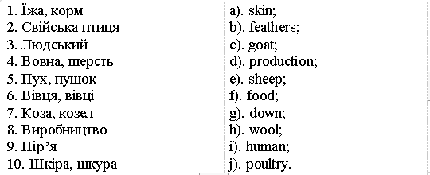
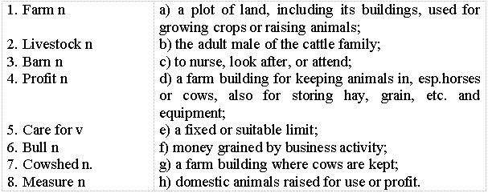

Lesson 6
UNIT 2
My specialty is techologist
BASIC LIVESTOCK PRODUCTION
Care and management of farm animals
Animal welfare – добробут тварин; physical and mental state – фізичний і психічний стан; physiological and behavioural needs – фізіологічні та поведінкові потреби; measure n – міра; careful observations – ретельні спостереження; behavior n – поведінка; moral concern – моральна турбота; arise v – випливати; interpret v – інтерпретувати; virtue n – позитивна тенденція, доброчесність; can only be acquired through – можна набути лише через; education and practical experience – освітній та практичний досвід; shelter – притулок; feeding – годування; breeding – розведення; barn n – комора; сарай; (ам.) корівник; bedding n – постільні речі, підстилка; bull n – бик; calf n – теля; care n – турбота,
піклування; careful adj – турботливий; cowshed n – корівник; lamb n – ягня; management n – утримання,
керування; livestock n – тваринництво; pigsty n – свинарник; sheep-pen n – вівчарня; poultry house – пташник; humidity n – вологість; straw n – солома; pasture n – пасовище. Read and translate the text: CARE AND MANAGEMENT OF FARM ANIMALS The expression ‘animal welfare’ has two distinct meanings. The first is a description of the physical and mental state of an animal as it seeks to meet its physiological and behavioural needs. It is a measure of welfare as perceived by the animal itself and something that we can study through careful observations of animal behaviour and the disciplines of welfare science. The second concept of animal welfare is as an expression of moral concern. It arises from the belief that animals can experience feelings that we would interpret as pain and suffering, thus we have duty to protect animals in our care from these things. A concern for animal welfare is obviously a virtue. It is good that we should care about animals. Caring for animals, however, involves more than virtue; it requires a sound understanding of the principles of husbandry and welfare and these things can only be acquired through education and practical experience. Farm animals require proper care and management such as shelter, feeding, breeding, and disease control. There are 5 areas of animal care and management are selection, nutrition, health, reproduction, and environment. A lot of work has to be done by a farmer in caring for his livestock and their products. Barns and other building are to be provided in order to protect the animals from unfavourable weather conditions. Young animals-lambs, calves and pigs are known to require special care and protection. During the first days after birth animals are weak and may die if proper care is not provided. At present separate building are usually provided for each kind of livestock such as cattle, hogs, sheep, and poultry. Cowsheds, sheep-pens, pigsties and poultry houses should be comfortable for livestock and workers, who take care of the animals. Much attention is now paid to lighting, ventilation, temperature, and humidity in animal building. Very often farmers keep bulls in separate barns. Probably no farm animal is more responsive to good care than is the dairy cow. Regularity in feeding and milking and kindness result in more milk and greater profits. Dairy cows are to be provided with plenty of bedding, such as clean, dry straw in the barns where they are kept. When not on pasture cows should take exercise to be in good breeding condition. GRAMMAR EXERCISES I. Answer the following questions: 1.Which distinct meanings has the expression ‘animal welfare’? 2.What does caring for animals involve? 3.Should farmers care for animal products? 4.Why are animals kept in building? 5.Why do farmers provide special care for young animals? 6.What farm building do you know? 7.What conditions are provided in animal buildings? 8.When should cows take much exercise? II. Group the following by parts of
speech: Noun
Adjective
Verb
expression
physical
seeks
Principles, crops, special, require, consist of, moral, care, , should care, keep, management, to specialize in, protection, arable, regularity, are grown, mixed, are used, calves, provide, husbandry, is kept, dairy, welfare, depends on.
III. Give English equivalents of the following Ukrainian words:

1.High beef and milk production is obtained by proper care and management as well as by proper feeding and fattening of cattle. 2.When cattle are kept in cowsheds they are fed with corn silage, grass silage and high-quality hay. 3.Dairy cows are milked with special machines. 4.There is always much work to do on the farm. 5.The farmer has to take great care of the young animals. 6.Cowsheds, sheep-pens and pigsties are to be kept clean and well ventilated. 7.Cows, bulls and calves should be provided with clean straw for bedding. 8.Animals are to take much exercise to be in good breeding condition.
V. Find the synonyms at the text the following words: Production, shed, to defend, solicitude, feeble, ox, homestead, accountable, good will, to supply with.
VI. Match the words from the text with their corresponding definitions:

VII. Translate the wolds paying attention to the words in bold type: 1.
Much water and salt should always be available for cattle. 2. The new sow is much more prolific than the old one. 3.
Much milk has been obtained from each cow in this herd. 4. This method of fattening hogs is much more
effective than the old one.
VIII. Agree or disagree with the statements according to the model: Model:
1.Dairy cattle provide beef. Do you agree with me? No,that is wrong. Dairy cattle provide dairy products. 2.Beef cattle are the producer of beef. Do you agree with me? Yes, that is right (you are quite right). Beef cattle are the producer of beef.
1. Dual-purpose cattle give us both milk and beef. 2. Hog breeding gives a vast range of dairy products. 3. The wool and skin of sheep are valuable raw materials for producing clothes. 4. To poultry belong hens, geese, ducks, turkeys and pigs. 5. Poultry provide meat, eggs and milk. 6. Rabbits are bred for meat. 7. The bee is the only producer of honey and wax.
IX. Translate the sentences paying attention to Participles forms:
1.The sow being prolific, the farmer may keep her up to 5 years or longer.
2.Being weaned at the due time, the pigs will gain in weight rapidly. 3.Animals receiving balanced rations grow and develop well. 4.Locating the feed some distance from the pen, we make the animals to
take exercise. 5.Weaning taking place 7 or 8 weeks after farrowing, the sow may farrow
twice a year. 6.Raising pigs on good pasture, we fatten them quickly. X. Read the text and answer the following questions:
1.Why is it best to take individuals from large litters? 2.Should pregnant sows be fat? 3.What feeds are used when good pasture is not available? 4.Is mineral supplement given to sows and pigs? 5.What ration is fed to the sows tending to fatten excessively? 6.When are sows placed in farrowing pens? 7.When do sows and pigs need more protection?
CARE OF PIGS The first week of a pig’s life is known to be especially critical. During this period due temperature, ventilation and sanitation in the pen are most important. Sometimes it is advisable to put newborn pigs in a warm place and bring them to their mother every two hours. In four or six hours they may be left with their mother. Young pigs begin eating solid food at the age of 3 to 4 weeks. At this age they are fed a thin slop of milk, wheat middlings and oatmeal. As they get older they may be fed soaked shelled corn. The feed is usually given to them in a separate enclosure known as a creep. Due to the creep feeding little pigs may be fed the best feed. Weaning pigs is usually done at 6 or 8 weeks of age. The best practice is to remove the sow from the pen, leaving the piglings in familiar surroundings. During the period of weaning the ration should be palatable and nutritious. More than 600 pounds of a balanced ration is required in feeding a pig from its weaning until it has a live weight of about 200 pounds. Some hog men are known to raise pigs entirely on grain. For such pigs to develop normally a mineral supplement should be provided. The mineral mixture usually includes equal parts of steamed bone meal, ground limestone and common salt.
A study has shown that Young pigs requir more iron and copper than it supplied in the sow"s milk. That is why they eat some turf and soil. Pigs on good pastures require 10 to 15 per cent less feed than those raised without pastures. Proper management is important for success in hog raising. Careful attention during breeding, farrowing, and rearing the pigs to weaning helps raise a productive heard. The mor- 63 tality of the young is much higher with swine than with other kinds of livestock. Since hogs live close to the ground they are subject to many parasites. The main task of the hogbreeder is to prevent diseases and parasites. Sanitation is therefore an important problem in hog raising. The rotational grazing is known to be the best way to prevent diseases and control parasites.
There are 2 types of swine - the lard and the bacon types. Pure lard breeds are the Poland, China, the Berkshire hog, the Hampshire, the Mirgorodskaya breed and others. The bacon type are the Large Yorkshire, the Large White breed, the Urzumskaya breed and others.
XI. Translate into English:
Тваринництво, утримувати, порода, розводити, молочна худоба, трава, м'ясо, молоко, фураж, пасовище, корівник, свинарник, піклування, сарай, солома, бик, корова, виробляти, підстилка, освітній та практичний досвід, поведінка, моральна турбота, добробут тварин, позитивна тенденція (доброчесність), притулок.
Learn the active vocabulary of the Lesson and be ready to use it in your further work: